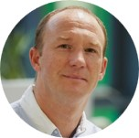

Dr. Edwin Wagena
CEO, Co-founder
Edwin leads commercial strategy, partnerships and company growth, bringing experience in biotech entrepreneurship and life science venture development.
About
A University of Sheffield spinout translating deep bioprocessing expertise into practical, flexible solutions for RNA medicine development.
Company
We support biotech and academic teams through specialised RNA manufacturing and analytical services.
Service delivery provides direct insight into process constraints, analytical requirements and deployment priorities. Those insights inform RNAbox™, our modular manufacturing technology programme.
Team
Our team combines RNA bioprocess engineering and advanced analytics with industrial and company-building experience.
CEO, Co-founder
Edwin leads commercial strategy, partnerships and company growth, bringing experience in biotech entrepreneurship and life science venture development.
COO, Co-founder
Emma leads operations, service delivery and technology translation, with expertise across mRNA manufacturing and analytical development.

CSO, Co-founder
Mark leads scientific strategy in RNA analytics and mass spectrometry, supporting the analytical capabilities behind RNA Forge services and technologies.
Scientific adviser, Co-founder
Zoltán provides strategic guidance on RNA bioprocess engineering, digital manufacturing and process innovation for RNA drug manufacturing.
Manufacturing lead
Adi leads RNA manufacturing development, supporting both service delivery and RNAbox™ platform development through process and manufacturing expertise.
Analytics lead
Caroline leads analytical development, supporting RNA quality assessment, bioanalytical workflows and process development insight.
Ecosystem
RNA Forge works across academia, biotech, pharma, CDMOs/CROs, technology providers and funders. Our modular approach supports collaboration and progressive integration into existing workflows.
Work with RNA Forge
Talk to us about RNA manufacturing, analytical development, technology evaluation or ecosystem collaboration.